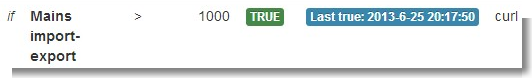

As for the Event plugin, sorry for not being more responsive, but between work, kids and trying to finish my energy monitor project I am always a couple of days behind in reading the forum. (I'm the one that did the modifications and then left Paul to handle all the details :) )
Anyway ... I am working on some improvements to the event plugin and I guess this is as good a place as another to discuss them.
What I am planning to add:
- Event types: handle events in case of manual feed update: the idea is to have a simple way to react to dashboard events like a button push
- Notification systems:
- Add an option for executing a shell script : together with the manual
- Add support for notify my android
- General: add the notion of 'Clearing' an event: the idea is to have the possibility to request a notification when an event that was previously triggered gets back to normal (event on temp > 25 degrees, clear when temp goes back to < 25 degrees or, in my case, event when a pump switches on, clear when it turns off). I know it is cosmetic, but I think it would help in having a quicker way other than looking at the feed graphs to monitor what happened.
Before starting hacking at it it would make sense to gather also other requests and try and organize them in a coherent fashion, so if anyone has some wishes about adding things to the event module I think this would be the best moment to speak them out. I'll try to put ll things together and hopefully to start working on it shortly
Regards
Re: Event Module - Update
Thanks Mattia
My thoughts for development are;
Paul
Re: Event Module - Update
Thank you very much Mattia.
How about one checkbox to activate or deactivate the notification? Sometimes you want to deactivate the notification temporarily instead of delete it.
Regards.
Re: Event Module - Update
@lobolobo:
The checkbox for temporarily disabling the event won't be a problem.
@Paul:
1.I agree, once the concept of clearing an event is introduced the mute option could be extended with a 'Warn only once' feature that would avoid repetitions. Don't know about the fixed mute time .. maybe leaving that as an option initially set to 0 since it would cause questions from people who don't read the docs (or the code in this case) and expect multiple notices
2.I think Notify my android is what you call NMA, and I haven't done a thorough research but from what I understand prowl only has an ios client and I wouldn't have any way to test it.. anyway I think you already can successfully use the 'call url' action, that could be extended to accept placeholders like {feed_id},{feed_value},{timestamp} to access whatever service.
Re: Event Module - Update
Well, as I wrote it selfishly as I only had an iPhone, I'd suggest adding in NMA support for Android. (Perhaps utilising https://github.com/snider/php-notifyMyAndroid) .. Oh, and my iPhone has bust and I've bought an Android Samsung phone!
May try and add some time into this tomorrow to add. So, current status? I need to add in the stuff that was posted to Martin to get events running again? At the moment it seems quite broken.
Thanks
Re: Event Module - Update
I've added in a test of the NMA into the repo. Anyone with a working system fancy testing it for me?
Re: Event Module - Update
In terms of shell scripts, I just put a PHP container script in a difficult to guess folder. Then just use the URL caller.
Re: Event Module - Update
Ok, elyobelyob is much quicker than me and added a working version of the NMA notifier
Just remember to run the database check and update in the admin tab since a new column in the event_settings table must be created
Re: Event Module - Update
....I just put a PHP container script in a difficult to guess folder. Then just use the URL caller. - elyobelyob
Good idea Nick, I'm trying to use a free iOS 'push' service - Boxcar, and have a script (attached as a *.txt file - php uploads not allowed in OEM) which I've added in ..event/scripts/boxcar/boxcar_send.php (plus an api file both of which came from here.)
To call the script $ php boxcar_send.php sends a push alert to my phone - Success!!
I want to make the alert more informative, and include the current feed reading that originated the event, etc, but not sure how to do it, so any advice would be great.
Paul
Re: Event Module - Update
Hi Paul,
you could change feed_model.php, function check_feed_event and add support for using a placeholder in the curl url:
(in check_feed_event, second switch):
case 2:
// call url
$body = str_replace('{value}', $value, $row['callcurl']);
$ch = curl_init();
// set URL and other appropriate options
curl_setopt($ch, CURLOPT_URL, $body);
curl_setopt($ch, CURLOPT_HEADER, 0);
curl_setopt($ch, CURLOPT_FRESH_CONNECT, true);
curl_setopt($ch, CURLOPT_TIMEOUT, 1);
// grab URL and pass it to the browser
curl_exec($ch);
// close cURL resource, and free up system resources
curl_close($ch);
error_log("Curl Log:".$row['callcurl']);
and then create an event with the path to the php script, with some parameters:
<path>/event/scripts/boxcar/boxcar_send.php?msg=Feed Value is {Value}&title=Feed Myfeed Title - {Value}
and modify your script to process input parameters:
<?php
/**
* Sample file for the boxcar php provider client
*
* @author Russell Smith <russell.smith@ukd1.co.uk>
* @copyright UKD1 Limited 2010
* @license licence.txt ISC license
* @see https://github.com/ukd1/Boxcar
*/
define('API_KEY', 'J2FXXXXXXXXXXFm');
define('API_SEC', 'QcFfxXXXXXXXXXXXXXXXXXXXXXXImI');
define('YOUR_EMAIL', 'myemail@gmail.com');
$msgTitle = 'Test Message';
$msgBody = 'Test Body';
if(isset($_GET["msg"])){
$msgBody = $_GET["msg"];
}
if(isset($_GET["title"])){
$msgTitle = $_GET["title"];
}
if (!function_exists('curl_init')) {
trigger_error('CURL must be enabled for boxcar_api to function', E_USER_ERROR);
}
// load the api class
require_once 'boxcar_api.php';
// this is needed to stop warnings when using the date functions
date_default_timezone_set('Europe/London');
// send alert
boxcar_api::factory(API_KEY, API_SEC, 'http://store.ukd1.co.uk.s3.amazonaws.com/ukd1_small.png')->broadcast($msgTitle, $msgBody);
Please keep in mind that I haven't tested any of this so you will have to proof it for syntax errors ... hope it helps ..
Re: Event Module - Update
Thanks Mattia, I'll try that tonight.
Paul
Re: Event Module - Update
I've just merged the pull request to enable events in the feed module, sorry for the slow merge, thanks for the nudging tweet and email Paul. I'm wondering whether to have a setting in settings.php with something like $enable_events = true; rather than calling if (is_dir(realpath(dirname(__FILE__)).'/../event/')) each time?
This all looks like great work on the event module, particularly interested in the notify my android.
Re: Event Module - Update
I've just added my latest changes to events repo (and fixed my mqtt module, to allow me to test). So definitely working, now. I did work blind over the weekend, thanks to madmatt for checking it.
Am happy for the feeds method to be altered. Personally though, events should be a standard module ;)
Re: Event Module - Update
Im thinking it might be good to make email global and if we use the swift mailer library installed via pear globally (not included in emoncms repo but an installation step requirement) that will keep the repository clean, the installation steps for swift mailer on linux are:
In settings.php you then have
$email = array(
'server' => "mail.emoncms.org",
'port' => 26,
'username' => "notify@emoncms.org",
'password' => "notrealpass",
'fromaddress' => "notify@emoncms.org",
'fromtitle' => "emoncms.org"
);
from which any module in emoncms can use to send emails, such as implementing a forgotten password feature.
What do you think?
Just got a NMA event to fire, worked great!
Re: Event Module - Update
Is that enough info for Google Apps mail? Won't it need secure connection or something, or is that just port info?
Anyway, I'm not fussed if it gets moved, but reckon this could trip up a few people who blindly update in future (as I just learnt!). The current setup was used quickly to supply myself with a quick Google Apps solution. I wouldn't go down the road of hosting the mail server on your own servers for us to proxy through.
Yeah, the NMA thing is cool. Got so used to Prowl on iPhone, it was a must have within minutes of moving phones.
The event module could do with some javascript tidying, if anyone is good at that. e.g. making sure the "add new event" has the correct fields showing as default. Would be nice to edit the existing event (e.g. move from prowl to NMA). Perhaps allow manually editing of the NMA/Prowl/etc messages .. .
Re: Event Module - Update
I've just got the event settings module to save using js here in same way as the raspberrypi module saves its settings with the saved label appearing after a successful update. Il test gmail as the mail server.
A global email account would be installation specific so you can set it to gmail if its a your own installation, yes not thinking of hosting a mail server for all local/remote emoncms installations to use. Just something quite similar to the way drupal or wordpress arrange notification emails, do you think that's the right way to be thinking about it? or would there be advantages to each of us say on the hosted install at emoncms.org entering our own email server details?
Re: Event Module - Update
In a hosted environment like emoncms.org that would shift the burden of successfully delivering a message from the provider chosen by each user to the provider chosen by you .. all messages for all the users would originate from a single domain / possibly from a single user unless you have a smtp server installed, configured and willing to forge the sender address with a custom sender address per emoncms user ...
Also, in your hosted environment the event module could easily become a cpu intensive task since it will execute at least one query per feed update ....
Re: Event Module - Update
Just got this working on my setup and NMA and gmail notifications are working great for the set value triggers but I can't get the inactive trigger to work. Is this trigger broken or have I missed something in the setup?
Re: Event Module - Update
Hi ngbod,
in the current version the inactive check is disabled.
I do have a version with the inactive check working I'm almost ready to push, but it is together with a bunch of stuff that I still have to test.
If you feel like applying a patch this one
diff --git a/event_model.php b/event_model.php
index 93711da..9b10bdb 100644
--- a/event_model.php
+++ b/event_model.php
@@ -124,16 +124,17 @@ class Event
global $user,$session,$feed;
$userid = $session['userid'];
- $result = $this->mysqli->query("SELECT * FROM event WHERE eventfeed = $feedid");
+ $result = $this->mysqli->query("SELECT * FROM event WHERE eventfeed = $feedid or eventtype=3");
// check type
while ($row = $result->fetch_array()) {
if ($row['lasttime']+$row['mutetime'] > time() ) {
- return 0;
+ continue;
}
$sendAlert = 0;
+
switch($row['eventtype']) {
case 0:
// more than
@@ -157,6 +158,13 @@ class Event
// inactive
// not sure this can be called as no feed updated
//if (((time()-$row['lasttime'])/3600)>24) {}
+ $feedData = $feed->get($row['eventfeed']);
+ //error_log("Feeddata: " .$feedData->time);
+ $t = time()- strtotime($feedData->time);
+ //error_log("t: " .$t);
+ if ($t > $row['eventvalue']){
+ $sendAlert = 1;
+ }
break;
case 4:
// updated
applied to feed_model.php will enable the inactive detection, and you can choose after how many seconds of inactivity the alert should be raised.
Re: Event Module - Update
Madmatt
I've tried the changes above to try and get Boxcar working, and if I use the curl url;
..../event/scripts/boxcar/boxcar_send.php?msg=Feed%20Value%20is%20{Value}&title=Feed%20Myfeed%20Title%20-%20{Value}
I get a push message;
Feed Myfeed Title - {Value}
Feed Value is {Value}
ie It does not retrieve the {Value}
also, the blue 'last true' box is missing from the event page.
You mentioned changing feed_model.php in your post, what changes are needed.
Thanks
Paul
Re: Event Module - Update
Hi Paul,
the correct syntax for the placeholder is {value} (not {Value}) otherwise it won't get substituted, but I finally had the time to look at the javascript and as it is it won't work. The javascript logic to create a new event is flawed, and no email/curl link and anything that is not an integer in the notification field gets saved (also the last true display logic isn't working for fields difefrent from email).
Will try and have a look at it today.
Re: Event Module - Update
I stand corrected .. the javascript logic doesn't work in chrome, while it works in firefox (don't have access to IE so can't test on that)
also, in order for curl to work you must have installed php5-curl (apt-get install php5-curl)
Re: Event Module - Update
Just merged in MadMatt's changes. Thanks Mattia.
Re: Event Module - Update
@Paul: The changes I pushed include an updated version of the curl mods, and a fix for the last true field not showing
@Ngbod: The changes also include support for the inactive feed
Re: Event Module - Update
@All:
I just pushed another changeset that adds a test button and an enable/disable button to the event list.
As soon as elyobelyob is able to approve it it will be available for everyone to test
Enjoy
Re: Event Module - Update
Merged .. don't forget to update your db schemas all ...
Re: Event Module - Update
madmatt .. I have a few cURL scripts that run on local IP and port e.g. http://192.168.1.55:5151/script.php .. are you sure the changes to cURL will allow this? Just checking before I investigate my own scripts (that have been fine until now .. )
Thanks
Re: Event Module - Update
.. They should, I only added the logic to split the parameters (if any) from the url and apply space escaping and value substitution to the parameters part.
If the url in question does not have parameters no harm should come from it (I have checked a standard url like htttp://localhost/a.php ) ...
Re: Event Module - Update
OK, ignore me .. I think there is a problem on my own script .. as it hasn't been notifying me from there .. however the emonCMS event trigger is fine!
Thanks
Re: Event Module - Update
Thanks for all the changes Mattia, but it's a little embarrassing when you fix all the whitespace I left around ;) Ha ha.
My excuse is that I was coding mostly over Christmas, generally intoxicated to a degree the whole time .. and when everyone else had passed out. :)
How easy would it to create an "edit"? I sometimes just want to change the mute time or something, minor changes that I hack the db directly for.
Re: Event Module - Update
@elyobelyob: the edit button shouldn't be much harder than the enable/disable button
As for the whitespaces i cheat and use sublime text, that automatically removes trailing spaces when you save the file...
Re: Event Module - Update
Great work, the disable/enable & test buttons are welcome additions to this module.
I've again tried to send push iOS messages via Boxcar, with a degree of success. If I call the URL;
<path>/event/scripts/boxcar/boxcar_send.php?msg=Feed%20Value%20is%20{value}&title=Feed%20Myfeed%20Title%20-%20{value}
I get a push message;
Feed Myfeed Title - 703
Feed Value is 703
So it is now successfully reproducing the feed value but not the name of the feed, which isn't so much a problem as I can edit the URL to identify individual events.
Again, many thanks Mattia & Nick.
Re: Event Module - Update
Thanks for the work men. Great.!!! :-)
Re: Event Module - Update
Thanks again Mattia, edit functionality merged in ...
Re: Event Module - Update
Hi all, just pushed a request that adds the edit feed functionality and also adds the {feed} placeholder in the curl url call.
As soon as Elyobelyob integrates it it will be available for download.Elyobelyob already pulled it ... man I hope he's at least giving it a look before hitting the merge button ;)Right now my to do list has pretty much exhausted, except for the CLEAR functionality that I'm still waiting for inspiration to begin tackling and the shell script option is pretty much covered by the call url option, I think. So if anyone has some more ideas I should be up for some other changes, I really like how both the backend and the frontend code is structured and it is really easy to add functionality (If you know what you're doing, I guess)
Enjoy and please test the edit thing .. I did some tests but they are by no mean exhaustive.
Regards
Re: Event Module - Update
I read through the source changes and it looked sensible enough. :) Thought to myself, glad I don't mess about with JS in my day job :)
Re: Event Module - Update
@madmatt I am wondering about the inactive method. Is it currently checking against the 'idle' time? To me, the inactive time is the time when it displays as inactive on the feeds page .. which I think is hard coded to 24 hours. (This should be user adjustable, TBH). So, for me, when a major sensor is inactive, I would want to be updated after 24 hours (or another pre-determined time), but would want to keep the mute time so that I don't get swamped by messages. (is this even possible?) ..
I have created a test, which is currently telling me that my lounge temp sensor is inactive, however I watched the feed, and it only went for 1 minute or so between updates.
Re: Event Module - Update
Hmm, that's because in my version of the inactive check you should specify the time after which you want the alert to be sent in the value field .. but I didn't enable the field to write the value in, so I guess it just kicks the alert as soon as the first new feed update comes in.
I am pushing a fix right now, and if you want the inactive event to kick after 24 hours you should put 86400 in the value field.
Re: Event Module - Update
Thanks have also made a couple of changes. Firstly I allowed that field to show in the front end, as well. I also renamed "not-prowl" to "not-priority" as it was misleading in the code .. I think the priority works fine with NMA too.
Re: Event Module - Update
Boxcar for iOS
Thanks to Mattia & Nick, I've now got push alerts being sent to my iPhone, via the free app - Boxcar so I thought that I'd add a few bits & pieces if anyone else wants to try it.
1) Make sure that you are up to date with the current event module in Github, as many changes have taken place recently, and this will only work with the new version.
2) Create a free 'Provider' account at Boxcar and make a note of your API key and API Secret. Also install Boxcar on your phone via iTunes.
3) Navigate to the .../emoncms/Modules/event/scripts folder and create a new folder beneath 'scripts'. Use an obscure name to stop visitors from guessing and making false alerts, but for now I'll call it 'boxcar'. Copy the attached 2 files from the attached zip into the directory.
4) Install php-curl $ apt-get install php5-curl
5) Edit the boxcar_send.php file and add your email address, API key & API secret, where indicated.
6) In emoncms > Extras > Event set up your alert, and select the 'call url' option. In the next field add the full http address to your boxcar_send.php file, and followed by the msg & title information, using this as an example;
http://www.yourdomain.com/emoncms/Modules/event/scripts/boxcar/boxcar_send.php?msg=The%20{feed}%20feed%20is%20currently%20{value}%20degC&title={feed}%20Alert
Once added, try a test and hopefully, almost instantly, you should receive something like the screenshot below (if using the url I've used as a demo above).
I think that's about it, but if I've missed anything, PM me and I'll correct/add it.
Paul
PS - Just remembered!, the placeholder{feed} retrieves your feed name, so ensure that you don't have any spaces in it (that's why my example is 'Greenhouse_temp' and not 'Greenhouse temp'.
Re: Event Module - Update
Sounds like it'd be easier to add native boxcar support to the event module. However, I was always a fan of Prowl when on iPhone.
Re: Event Module - Update
....Sounds like it'd be easier to add native boxcar support to the event module
You are probably right Nick. I wish I had the skills to do it!
Paul
Re: Event Module - Update
Just pushed in some changes to add {feed} to other types as well. In fact, the whole message creator could do with a review to standardise it.
Re: Event Module - Update
@Paul Reed .... we're all cutting and pasting this stuff ourselves ;)
Re: Event Module - Update
Hmm, the email seems to be triggering constantly .. investigating ..
Re: Event Module - Update
Ignore last one .. managed to create a test event .. never having used the email before, I seem to receive two emails on that event .. weird. Is that usual behaviour?
Re: Event Module - Update
@paul reed ... Native boxcar support added. Not tested ... can you have a play and let me know .. you'll need to run the admin db update first ...
Thanks
Re: Event Module - Update
Small, but necessary, fix just pushed ..
Re: Event Module - Update
Hi Nick, just tried the latest, and I think that the boxcar email field is missing from the 'Event Settings' page.
It presently won't save the settings and returns the error;
Notice: Undefined variable: boxcaremail in /var/www/emoncms/Modules/event/event_model.php on line 77
Paul
Re: Event Module - Update
Did you run the db update?
Re: Event Module - Update
No, you were right. I left email in there as was in the sample, realised later it was a bad example. Updated and pushed.
Re: Event Module - Update
Somethings not right..
I've just updated your latest commit and all of my feeds have suddenly stopped updating!
They were working fine until I ran the git pull & updated the database, but now they arent working at all.
I've done a reboot - still not working
Doesn't Boxcar need the 'Boxcar email address' as well as the API key & API secret?
Paul
Re: Event Module - Update
Digging out my old iPhone testing .. will test and update shortly.
Re: Event Module - Update
It's weird. Boxcar is returning a 401 error, despite me using their API documented code. I can still send the other messages. What do you mean by 'stopped updating'?
Re: Event Module - Update
Hi Nick, sorry had visitors all afternoon..
When I updated to your git merge of about 1pm today, all of my feeds stopped updating, ie despite my emontx's sending data, they were not recorded in emoncms.
So something was definitely amiss.
A few moments ago, I did another git pull from the event master, and now all of my feeds have again started updating emoncms - Phew! but it's still not sending alerts, I don't know if it's working on your system?
Paul
Re: Event Module - Update
I think the boxcart files didn't get imported into git previously. Not sure why not. Anyway, they are there now. I've also added in the email in case that needs to be there (I was trying to use broadcast method at first).
So, when I test the 'test', it calls a URL like event/test.json?id=46&feedid=1 .. in there the boxcar comes with an error ..
Fatal error: Uncaught exception 'boxcar_exception' with message 'Request failed (Probably your fault)' in /var/www/emoncms/Modules/event/scripts/boxcar/boxcar_api.php:200 Stack trace: #0 /var/www/emoncms/Modules/event/scripts/boxcar/boxcar_api.php(171): boxcar_api->default_response_handler(Array) #1 /var/www/emoncms/Modules/event/scripts/boxcar/boxcar_api.php(110): boxcar_api->do_notify('notifications', 'email@email.com', 'EmonCMS', 'TEST - Feed is ...', 999, NULL, NULL, NULL) #2 /var/www/emoncms/Modules/event/event_model.php(409): boxcar_api->notify('email@email.com', 'EmonCMS', 'TEST - Feed is ...', 999) #3 /var/www/emoncms/Modules/event/event_model.php(125): Event->check_feed_event(46, 1371404574, 1371404574, '18.6', NULL, true) #4 /var/www/emoncms/Modules/event/event_controller.php(82): Event->test('1', 46, 1) #5 /var/www/emoncms/core.php(66): event_controller() #6 /var/www/emoncms/index.php(78): controller('event') #7 {main} thrown in /var/www/emoncms/Modules/event/scripts/boxcar/boxcar_api.php on line 200
As far as I can see, this should be working .. I have not a lot of boxcar experience, and thought I had created a provider correctly. It looks like the same version you were running via the curl method. All a bit confusing. Am also trying to figure out why the message doesn't'always replace the {feed} and {value} ...
Re: Event Module - Update
Yes, I've noticed that whenever the condition becomes TRUE, all of my feeds stop updating, so presumably the error above is causing this.
PS, I've edited out your email address from the 'Fatal error' log above.
Paul
Re: Event Module - Update
I have just pushed in a try/catch which should handle the fatal error. I can't see why boxcar isn't working, though.
Re: Event Module - Update
I'm afraid it doesn't - just crashed again.
Paul
Re: Event Module - Update
If you don't use the boxcar method, everything works ok? I may remove the boxcar method, as something with their API clearly doesn't work.
Re: Event Module - Update
Agree.
Would have been nice to have it integrated, but I had it working using the 'call url' OK which will suffice.
Can you roll back Git to the 13th June?
Paul
Re: Event Module - Update
I think I've rolled back okay.
Re: Event Module - Update
Afraid not;
pi@emoncmspi /var/www/emoncms/Modules/event $ git pull origin master
From https://github.com/emoncms/event
* branch master -> FETCH_HEAD
Auto-merging event_model.php
CONFLICT (content): Merge conflict in event_model.php
Automatic merge failed; fix conflicts and then commit the result.
Paul
Re: Event Module - Update
Sorry, been away all day. Have you made changes to event_model? It's the merge that's failing. More than likely deleting it via 'rm event_model.php' will allow it to come back in fully. (Don't do a git rm though!) ..
Or check the changes that it's asking you to merge manually. Another method is to 'git checkout e7bc597283d475' .. this should put it back to that earlier merge.
Personally, I'd try the 'rm' first. It should allow you to put it back to origin master.
Re: Event Module - Update
Paul, yeah, sorry about that. Glad you got it going. That last thing was a git merge issue, the db was still fine. But, yeah, will try and be more careful ... really confused with boxcar. (Personally, Prowl on iPhone is much better :) )
I do notice that the {feed} doesn't always replace. Strange issue, as it works sometimes, but not every time. I've tried moving the 'message' replace method to a single place. Any ideas Mattia??
Re: Event Module - Update
Nick,
I took the cowards way out this evening and deleted the event folder in emoncms , and the 2 'event' tables in the database. Re-installed the event module from scratch via Git and everything back as normal, so your rollback has worked OK, and we still have a fully functioning event module in Git.
Thanks for your efforts yesterday, I could sense your frustration!
Paul
Re: Event Module - Update
Hi, haven't really looked at the source since saturday as it was changing all the time. Will try to sort out tomorrow the logic for the feed placeholder. Any hint about when it gets and when it doesn't get substituted ?
Re: Event Module - Update
The logic in the code looks good, are you sure that the placeholder is {feed} and not {Feed} or {feed } ?
Since the string replacement is case sensitive and isn't fuzzy that could be the case, if you relaly can come up with an example of when it works and when it doesnt (with a mysql select of the two event rows) that would definitely help in finding it out.
Regards
Re: Event Module - Update
{feed} seems to work fine for me using a URL call to Boxcar (as per this), however the feed name cannot contain spaces (because it's part of a URL), so I have renamed some of my feeds;
e.g. 'Greenhouse temp' has become 'Greenhouse_temp'
Paul
Re: Event Module - Update
Hi Paul, in theory the latest version of the code should be able to understand a space in the feed name, the space to %20 substitution is the last operation performed on the parameters.
If that's not the case, please give me a couple of examples (I have no feeds with spaces to test them with) and will see what I can do
Re: Event Module - Update
You are correct Mattia, I changed my feed names when you first introduced {feed} and had not noticed that you had changed the code.
Works good for me, thanks
Paul
Re: Event Module - Update
OK, I have been through it loads testing and writing. Finally gave up hacking on command line. Rebooted my Pi and brought in a clean copy of event module. Seems fine now! Weird ... but not touching it again for a while now ;)
Re: Event Module - Update
Just noticed that there is a an hour's time difference between the time recorded in the 'Last True' blue box, and the actual time the trigger took place.
It appears that emoncms takes account of 'British Summer Time' and plots graphs etc according to the local time, whilst the blue 'Last True' box
obtainsdisplays the time according to UTC.Example, I set a trigger whose condition was met at 14:59 (BST) today, but the blue box recorded:
Last true: 2013-6-21 13:59:52 (UTC)
Yet if I check the database, I see that the condition was met at 1371823191 (Unix time) and the Last True is recorded as 1371823192 - so both are pretty much the same time (in the database).
Paul.
Re: Event Module - Update
Hi Paul,
sorry for the late answer .. shouldn't really read the forum on weekends because my brain resets on monday .... (and having the basement flooded on sunday evening doesn't help ...)
Anyway, the code that sets the lasttime field on the event hasn't changed and it is pretty simple:
$this->mysqli->query( "UPDATE event SET lasttime = '".time()."' WHERE id='".$row['id']."'" )
and the code that shows the time hasn't changed either:
echo "<span class='label label-info' >Last true: ".date("Y-n-j H:i:s", $item['lasttime'])."</span>";
the time() function returns an epoch with no time zone, while the date() function uses that epoch and applies the default timezone set for the php environment. You can check which timezone you are using by creating a file named info.php:
<? phpinfo(); ?>
and opening it in the browser. Look for a configuration section named "date" where you can see which timezone your system is using
If you could post a couple of examples that include the time shown in the browser, actual timestamp on the database (select timestamp from event where event_id=xx) and the result of the "date" command on the raspberry command line it should be enough to sort out what's happening..
Regards
Mattia
Re: Event Module - Update
OK, well I set an event on feed_11 to trigger when 'power >1000'.
When I switched on a 2.2kW load at 21:17 (local time), the event triggered, and an alert was sent.
All charts in emoncms correctly show that the event triggered at 21:17;
However, the 'last true' blue box shows 20:17:50

Database entries - The lasttime entry in the 'event' table is 1372191470 and the entry in the feed_11 table is timed at 1372191469.
The 'date' command was run a few minutes later and returned;
pi@emoncmspi ~ $ date
Tue Jun 25 20:19:47 UTC 2013
phpinfo provided the following information;
Paul
Re: Event Module - Update
Hi Paul,
your raspberry is set to UTC time zone, the graphs display the correct time because they use the time zone set in your browser/operating system.
The lasttime value 1372191470 is correct and it's date value is: GMT: Tue, 25 Jun 2013 20:17:50 GMT (GMT is the same as UTC)
What you can do to have the lasttrue value show the correct time
1 - Change the timezone in the raspberry to your time zone (dpkg-reconfigure tzdata)
2 - have me change the lasttime display to take into account the locale settings for the current user: can do, nut you'll have the same problem whenever a date() function is used in any other module
3 - add to settings php this function call:
date_default_timezone_set ( 'Europe/London');
and see whether it works ;)
Regards
Mattia
Re: Event Module - Update
Many Thanks Mattia.
Option 1, followed by a reboot has resolved the issue. Now I get exactly the same 'alert time' on both graphs and the 'Last True' box.
Perhaps the 'Ready to go image' installation guide needs updating to ensure that users change their timezone to ensure this issue is not repeated.
Paul
Re: Event Module - Update
Is there a possibility to hide the 'event settings' link to non admin users? I tried to add something like 'if ($session['admin']==1)' to the event_list.php but I can't get it to work.
Re: Event Module - Update
Hi, you mean you changed this line:
<div style="float:right;"><a href="<?php echo $path; ?>event/settings">Event Settings</a></div>
to
<?php
if ($session['admin']==1){
?>
<div style="float:right;"><a href="<?php echo $path; ?>event/settings">Event Settings</a></div>
<?php
}
?>
and it didn't work ?
Re: Event Module - Update
Hi,
Nope it did not work. But I just changed it to $_SESSION['admin']==1 which works. Thanks for your help.
Re: Event Module - Update
Thanks to Mattia and other's hard work this is working great on my system now. A few times so far it has notified me via push gmail and NMA that my emontx has frozen, when I've been at the other end of the country, so that I could get the wife to power cycle the emontx before too much data was missed.
Has anyone looked into taking the event module further to control household appliances say?
I was thinking that if the event module could be set to run a specific sketch when a defined feed reached a set value I could use, for example, 433mhz OOK rf controlled power sockets to switch from the top immersion to the bottom immersion on my PV diverter when the top tank sensor reached say 70C (or alternatively switch on a destrat pump for instance).
I was looking at Martin Harizanovs experiments with the rf socket controllers here. http://harizanov.com/2013/02/433mhz-ook-with-funky-v2-to-remotely-control-power-sockets/
I can think of several other uses these sockets could be put to in conjunction with the event module like switching on dishwashers etc when PV generation is above a certain level.
Re: Event Module - Update
I would like to have something like this controlling my BBSB plugs, which could operate the lights etc. However, I'd likely use the 'call a script' functionality and build that myself.
Re: Event Module - Update
I have thought a little bit about the possibility of expanding the capabilities of the event module other than the 'call a url an pray you obtain the result you expected' it already has, and I think it's just not worth it.
What I mean is that for simple things the capability is already there:
Other than that and you really need a two way communication to be able to handle anomalies, speed up response times ... and the event module (and emocms at the moment) just isn't the right tool for that job .. forwarding the events to a home automation system .. yes, acting as the home automation system ... no
Re: Event Module - Update
Hi Guys,
Thanks for all the work your doing around this great feature, I can't wait to get it working. Hope you can guide me or direct me to instructions on how to activate same. So far I've registered with nma and have a key. The nma key is now in event settings and I've set up notification to nma. Is that it or am I missing something else? I'm using latest event module on hosted server so not sure about loading "apt-get install php5-curl" or it this only relevant when using RPI.
Cheers
Peter
Re: Event Module - Update
Hi Peter,
The php-curl module is needed only when you use the call url notify method ... And it is needed independently of the platform on which emoncms is installed. Is nma working for you? Please remember that unless you subscribe to the premium service you have a limit of 5 notifications per day...
Re: Event Module - Update
Thanks for reply. Just to be sure I upgraded to latest event and emoncms today. I sent one test using nma send notification which was received on my phone ok.
Found the issue, I changed nma key at some stage during testing yesterday but didn't update to new key in emoncms event settings. It is working - excellent feature.
Thanks Peter
Re: Event Module - Update
In my previous comment I wasn't thinking of the event module controlling a full home automation system I was just thinking what if the event module could be made to run a simple OOK script as well as email/ NMA when a feed went above or below a certain value or when no data was received for a set time. This script could turn on or off or off then back on a RF plug socket and could be used for things like power cycling a frozen Emontx. Instead of just notifying you the emontx was not transmitting, the module could restart the emontx automatically without the user having to be present.
Re: Event Module - Update
Hi,
I have found a need with this module that I think would be a great add on.
More recently I have found a requirement to be notified when 2 things are true such as light level is low and Time is after 12PM.
Currently due to the way that the system is built you can select only one of these to show as true and an action happen then, which means that when it gets dark, it turns my light on, then I have to wait the mute time. In the summer this was fine, but now I am finding my lights coming on at 6AM, not too bad at the moment as I am just getting up then, but this is only going to get earlier, and earlier until feb / march time.
The other situation I have found is I want to make a call to a notification system when the light levels of one room is high and the house consumption is high. Think workshop/loft lighting being left on accidentally after being called in.
How hard would it be to have something like this added, I am not famillular with OOP / MVC so this is a little outside my league...
Re: Event Module - Update
Hi,
I have successfully installed and configured the EVENT module (no error).
I set up an allert and if i TEST it a mail has been sent successfully, but it doesn't work when the threshold is reached ( no email ).
Any suggestions?
Any log file to read?
I am using emoncmspiv5avr0205_13
thank you
Angelo
Re: Event Module - Update
I do some test with event...
i do a 60% of code for my house with arduino.. il work like a slave.. read all 1wire sensor and pub to oem..
if i add a sensor it work correctly and put sensor and value on OEM.. it's fantastic.
Now i need to do the rules to set the relays...
if a sensorX is greater of sensorY the on relays 1..
if a sensorX is greater of sensorY +Z the on relays 2..
etc etc...
With this system i have divide the logic of work to the reading of sensor.. it's simple and expandable without touch arduino code ;) it's FANTASTIC!!!
Arduino read sensor, write in OEM
->>EVENT<<-
Arduino read OEM and set relays
Now i need to modify the event to do my program.. i try to do it...
if someone do that befone.. all ideas are FANTASTIC ;)
Re: Event Module - Update
solved
http://openenergymonitor.org/emon/node/2448